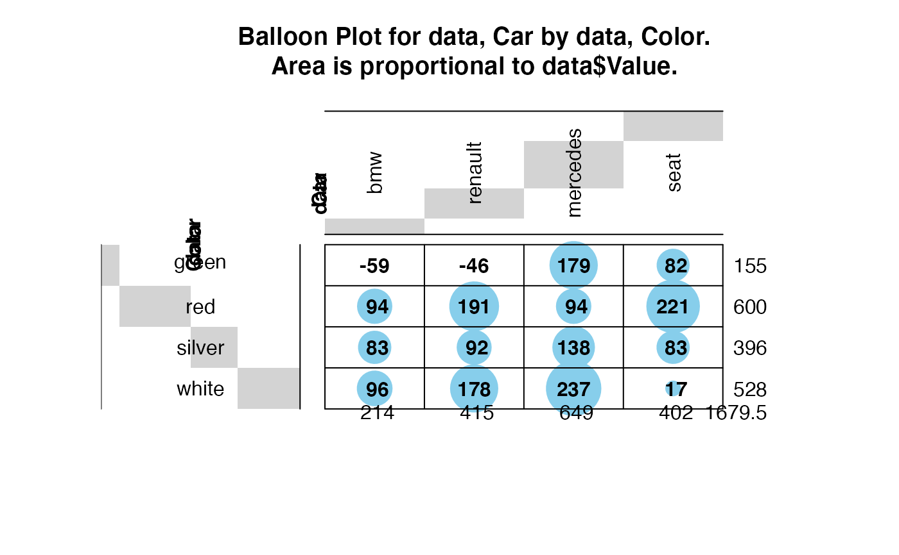
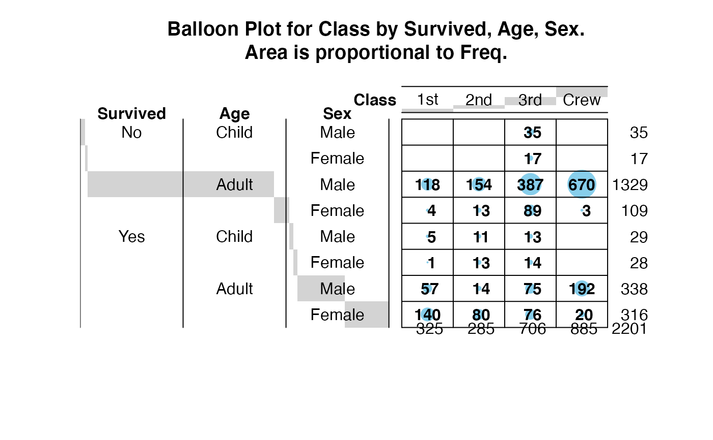
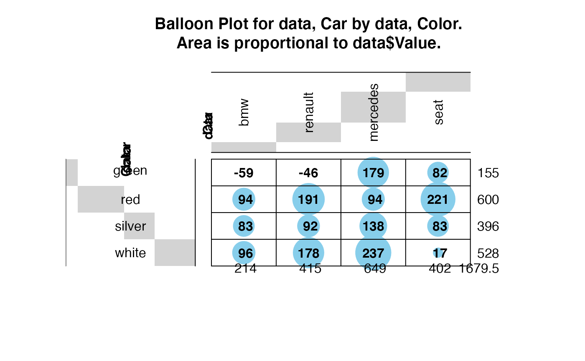
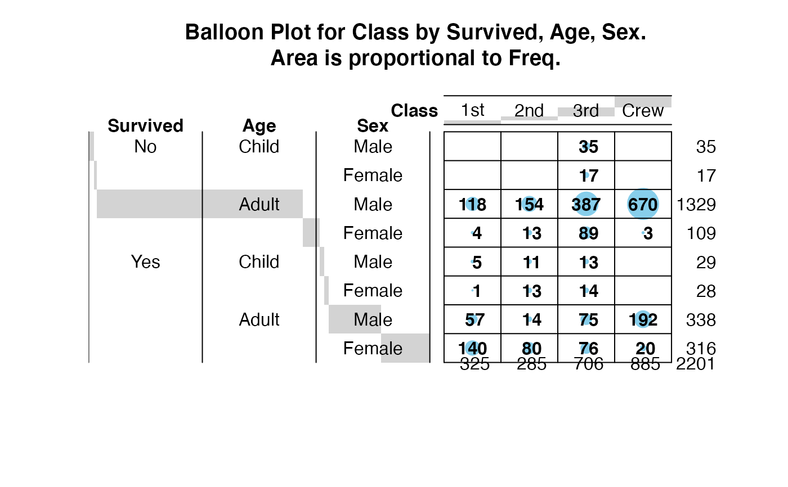

Plot a graphical matrix where each cell contains a dot whose size reflects the relative magnitude of the corresponding component.
balloonplot.RdPlot a graphical matrix where each cell contains a dot whose size reflects the relative magnitude of the corresponding component.
balloonplot(x, ...)
# S3 method for class 'table'
balloonplot(x, xlab, ylab, zlab, show.zeros=FALSE,show.margins=TRUE,...)
# Default S3 method
balloonplot(x,y,z,
xlab,
ylab,
zlab=deparse(substitute(z)),
dotsize=2/max(strwidth(19),strheight(19)),
dotchar=19,
dotcolor="skyblue",
text.size=1,
text.color=par("fg"),
main,
label=TRUE,
label.digits=2,
label.size=1,
label.color=par("fg"),
scale.method=c("volume","diameter"),
scale.range=c("absolute","relative"),
colsrt=par("srt"),
rowsrt=par("srt"),
colmar=1,
rowmar=2,
show.zeros=FALSE,
show.margins=TRUE,
cum.margins=TRUE,
sorted=TRUE,
label.lines=TRUE,
fun=function(x)sum(x,na.rm=T),
hide.duplicates=TRUE,
... )Arguments
- x
A table object, or either a vector or a list of several categorical vectors containing grouping variables for the first (x) margin of the plotted matrix.
- y
Vector or list of vectors for grouping variables for the second (y) dimension of the plotted matrix.
- z
Vector of values for the size of the dots in the plotted matrix.
- xlab
Text label for the x dimension. This will be displayed on the x axis and in the plot title.
- ylab
Text label for the y dimension. This will be displayed on the y axis and in the plot title.
- zlab
Text label for the dot size. This will be included in the plot title.
- dotsize
Maximum dot size. You may need to adjust this value for different plot devices and layouts.
- dotchar
Plotting symbol or character used for dots. See the help page for the points function for symbol codes.
- dotcolor
Scalar or vector specifying the color(s) of the dots in the plot.
- text.size, text.color
Character size and color for row and column headers
- main
Plot title text.
- label
Boolean flag indicating whether the actual value of the elements should be shown on the plot.
- label.digits
Number of digits used in formatting value labels.
- label.size, label.color
Character size and color for value labels.
- scale.method
Method of scaling the sizes of the dot, either "volume" or "diameter". See below.
- scale.range
Method for scaling original data to compute circle diameter.
scale.range="absolute"scales the data relative to 0 (i.e, maps [0,max(z)] –> [0,1]), whilescale.range="relative"scales the data relative to min(z) (i.e. maps [min(z), max(z)] –> [0,1]).- rowsrt, colsrt
Angle of rotation for row and column labels.
- rowmar, colmar
Space allocated for row and column labels. Each unit is the width/height of one cell in the table.
- show.zeros
boolean. If
FALSE, entries containing zero will be left blank in the plotted matrix. IfTRUE, zeros will be displayed.- show.margins
boolean. If
TRUE, row and column sums are printed in the bottom and right margins, respectively.- cum.margins
boolean. If
TRUE, marginal fractions are graphically presented in grey behind the row/column label area.- sorted
boolean. If
TRUE, the rows will be arranged in sorted order by using the levels of the first y factor, then the second y factor, etc. The same process is used for the columns, based on the x factors- label.lines
boolean. If
TRUE, borders will be drawn for row and column level headers.- hide.duplicates
boolean. If
TRUE, column and row headers will omit duplicates within row/column to reduce clutter. Defaults toTRUE.- fun
function to be used to combine data elements with the same levels of the grouping variables
xandy. Defaults tosum- ...
Additional arguments passed to
balloonplot.defaultorplot, as appropriate.
Details
This function plots a visual matrix. In each x,y cell a
dot is plotted which reflects the relative size of the corresponding
value of z. When scale.method="volume" the volume of
the dot is proportional to the relative size of z. When
scale.method="diameter", the diameter of the dot is proportional to
the the relative size of z. The "volume" method is default
because the "diameter" method visually exaggerates differences.
Value
Nothing of interest.
Note
z is expected to be non-negative. The function will still
operate correctly if there are negative values of z, but the
corresponding dots will have 0 size and a warning will be generated.
References
Function inspired by question posed on R-help by Ramon Alonso-Allende allende@cnb.uam.es.
See also
bubbleplot provides an alternative interface and visual
style based on scatterplots instead of tables.
Examples
# Create an Example Data Frame Containing Car x Color data
carnames <- c("bmw","renault","mercedes","seat")
carcolors <- c("red","white","silver","green")
datavals <- round(rnorm(16, mean=100, sd=60),1)
data <- data.frame(Car=rep(carnames,4),
Color=rep(carcolors, c(4,4,4,4) ),
Value=datavals )
# show the data
data
#> Car Color Value
#> 1 bmw red 93.6
#> 2 renault red 190.7
#> 3 mercedes red 94.3
#> 4 seat red 221.1
#> 5 bmw white 96.2
#> 6 renault white 178.3
#> 7 mercedes white 237.2
#> 8 seat white 16.7
#> 9 bmw silver 83.3
#> 10 renault silver 92.0
#> 11 mercedes silver 138.2
#> 12 seat silver 82.9
#> 13 bmw green -59.4
#> 14 renault green -46.4
#> 15 mercedes green 179.2
#> 16 seat green 81.6
# generate balloon plot with default scaling
balloonplot( data$Car, data$Color, data$Value)
 # show margin label rotation & space expansion, using some long labels
levels(data$Car) <- c("BMW: High End, German","Renault: Medium End, French",
"Mercedes: High End, German", "Seat: Imaginary, Unknown Producer")
# generate balloon plot with default scaling
balloonplot( data$Car, data$Color, data$Value, colmar=3, colsrt=90)

# Create an example using table
xnames <- sample( letters[1:3], 50, replace=2)
ynames <- sample( 1:5, 50, replace=2)
tab <- table(xnames, ynames)
balloonplot(tab)
# Example of multiple classification variabls using the Titanic data
library(datasets)
data(Titanic)
dframe <- as.data.frame(Titanic) # convert to 1 entry per row format
attach(dframe)
balloonplot(x=Class, y=list(Survived, Age, Sex), z=Freq, sort=TRUE)

# colorize: surviors lightblue, non-survivors: grey
Colors <- Titanic
Colors[,,,"Yes"] <- "skyblue"
Colors[,,,"No"] <- "grey"
colors <- as.character(as.data.frame(Colors)$Freq)
balloonplot(x=list(Age,Sex),
y=list(Class=Class,
Survived=reorder.factor(Survived,new.order=c(2,1))
),
z=Freq,
zlab="Number of Passengers",
sort=TRUE,
dotcol = colors,
show.zeros=TRUE,
show.margins=TRUE)
# show margin label rotation & space expansion, using some long labels
levels(data$Car) <- c("BMW: High End, German","Renault: Medium End, French",
"Mercedes: High End, German", "Seat: Imaginary, Unknown Producer")
# generate balloon plot with default scaling
balloonplot( data$Car, data$Color, data$Value, colmar=3, colsrt=90)

# Create an example using table
xnames <- sample( letters[1:3], 50, replace=2)
ynames <- sample( 1:5, 50, replace=2)
tab <- table(xnames, ynames)
balloonplot(tab)
# Example of multiple classification variabls using the Titanic data
library(datasets)
data(Titanic)
dframe <- as.data.frame(Titanic) # convert to 1 entry per row format
attach(dframe)
balloonplot(x=Class, y=list(Survived, Age, Sex), z=Freq, sort=TRUE)

# colorize: surviors lightblue, non-survivors: grey
Colors <- Titanic
Colors[,,,"Yes"] <- "skyblue"
Colors[,,,"No"] <- "grey"
colors <- as.character(as.data.frame(Colors)$Freq)
balloonplot(x=list(Age,Sex),
y=list(Class=Class,
Survived=reorder.factor(Survived,new.order=c(2,1))
),
z=Freq,
zlab="Number of Passengers",
sort=TRUE,
dotcol = colors,
show.zeros=TRUE,
show.margins=TRUE)